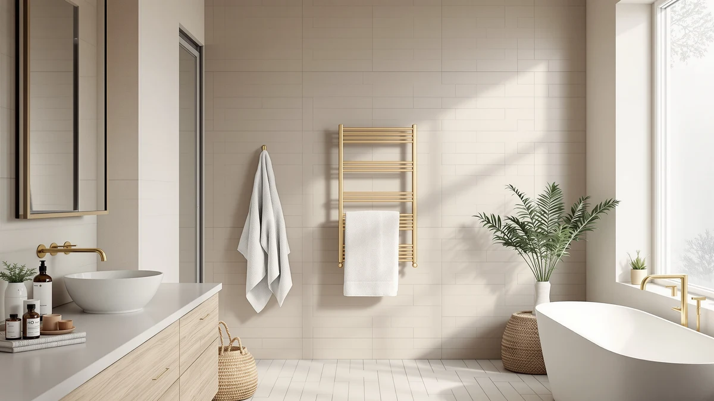

Towel Warmer Bucket vs. Cabinet: Which Style Should You Buy in 2026?
Prices and picks verified as of August 2026. Independent, reader-supported reviews.


Things to Know Before You Buy
- A towel warmer bucket heats one or two towels at a time inside a small countertop unit, while a towel warmer cabinet is a floor-standing box that warms four or more towels or robes at once.
- Bucket-style warmers in this comparison run $54.99 to $109.99, and the StateRiver Towel Warmer Cabinet 23L costs $99.99, so a cabinet does not automatically cost more than a bucket.
- A bucket warms a towel in 8 to 15 minutes; a cabinet needs closer to 20 to 30 minutes to bring several towels up to temperature because it heats a larger enclosed space.
- Buckets fit on a bathroom counter or vanity shelf, while cabinets need floor space roughly the size of a small nightstand.
- Both styles plug into a standard outlet, so neither the towel warmer bucket nor the cabinet requires the hardwired wiring that wall-mounted heated towel racks often need.
The towel warmer bucket vs cabinet decision comes down to how many towels you need warm at once and how much bathroom space you can spare for the unit that does it. A bucket is a compact countertop appliance built around a single insulated drum, while a cabinet is a floor-standing box with shelving that warms several towels or a robe in one cycle. Both plug into a regular outlet and skip the plumbing or hardwiring that other bathroom heating fixtures need.
Price does not split neatly between the two categories either. Bucket-style units here range from $54.99 to $109.99, and the StateRiver Towel Warmer Cabinet 23L sits at $99.99, right inside that same range despite holding far more towels. This guide compares both across build quality, price, and daily use, then tells you which one fits your bathroom and household size.
Quick Answer
For most single-person bathrooms, a towel warmer bucket wins the towel warmer bucket vs cabinet comparison because it costs less to start, heats faster, and needs no floor space. Choose a cabinet instead when you are warming towels or robes for two or more people at once, or when you want several towels ready at the same time. Neither style beats the other outright; the right pick depends on how many towels you warm on a typical day.
What is Towel Warmer Bucket?
A towel warmer bucket is a compact countertop appliance shaped like a tall canister, built around a heating element in the base and an insulated lid that traps warm air around a rolled or folded towel. You plug it into a wall outlet, drop in one towel, close the lid, and the unit brings the fabric up to temperature in roughly 8 to 15 minutes depending on wattage and capacity. Most models in this category, including the SereneLife Bucket Towel Warmers White and the VEVOR Hot Towel Warmer 5L and 8L, hold between 5 and 8 liters of interior space, enough for a single bath towel or two hand towels folded together.
Higher-end buckets add features that push price toward the $80 to $110 range: the SereneLife Digital Display Bucket Towel includes a timer and temperature readout, while the NOVAL 8L model adds auto shut-off after a set cycle. Entry-level buckets skip the display and rely on a simple dial or single button, which keeps the SereneLife Bucket Towel Warmers White and similar units closer to $55 to $80.
Because a towel warmer bucket only holds what fits inside its drum, it suits one person warming one towel before or after a shower rather than a household sharing towels across multiple bathrooms.
What is Cabinet?
A towel warmer cabinet is a floor-standing unit built like a narrow wardrobe, with a hinged door, wire or slat shelving inside, and a heating element that circulates warm air through the entire enclosed space rather than around a single towel. The StateRiver Towel Warmer Cabinet 23L, the only cabinet-style option in this comparison, holds roughly 23 liters of interior volume, enough for four to six folded towels, a couple of bathrobes, or a mix of both stacked across its shelves.
Because the heating element warms the whole cabinet rather than a single drum, a towel warmer cabinet takes longer to reach full temperature, typically 20 to 30 minutes, but it keeps every towel inside warm at the same time rather than one at a time. That makes it a better fit for a shared bathroom, a couple getting ready together, or a household that wants a stack of ready-to-use towels rather than a single one.
At $99.99, the StateRiver cabinet costs roughly what a premium towel warmer bucket costs, so the price gap between the two styles is smaller than the size difference suggests. A cabinet charges you for capacity and standing storage more than for heat itself.
Head-to-Head: Build Quality & Durability
Both towel warmer bucket and towel warmer cabinet designs rely on a single electric heating element, so the core technology is not what separates them. A bucket packs its element into a base disc under an insulated plastic or metal shell, a compact build with few moving parts and a lid hinge as the main wear point. The lid hinge on units like the SereneLife Bucket Towel Warmers White is usually the first spot to loosen after years of daily use, though replacement hinges cost only a few dollars.
A cabinet spreads the same heating principle across a taller enclosure with a full door, shelving brackets, and often a digital control panel, so it carries more parts that can fail over time: door seals, shelf clips, and the control board itself. The StateRiver Towel Warmer Cabinet 23L uses a metal shell rather than plastic, and that shell holds up better to daily door use than the hinge on a smaller bucket.
Neither style needs professional installation or hardwired electrical work, unlike hardwired heated towel racks. Both plug into a standard outlet and sit on their own feet, so a defective unit is a simple swap rather than a repair job. Build quality between a towel warmer bucket and a towel warmer cabinet comes down more to brand and materials than to the category itself.
Head-to-Head: Price & Value
Price does not split cleanly along the towel warmer bucket vs cabinet line the way you might expect. Bucket-style units in this comparison range from $54.99 for the Serenelife Counter Towel Warmer Luxury to $109.99 for the NOVAL 8L Small Hot Towel, a $55 spread driven mostly by digital displays and extra safety features rather than capacity. The StateRiver Towel Warmer Cabinet 23L sits at $99.99, squarely inside that same bucket price range despite holding far more towels.
That means a cabinet delivers more capacity per dollar than most buckets, but a bucket wins if your only goal is warming a single towel as cheaply as possible. The Serenelife Counter Towel Warmer Luxury at $54.99 is the cheapest way into either category, while the StateRiver cabinet is the better value if you plan to warm towels for more than one person.
Head-to-Head: Use Experience
Using a towel warmer bucket becomes a short daily ritual: roll or fold one towel, drop it in, close the lid, and wait 8 to 15 minutes before your shower. That short cycle time makes a bucket easy to fit into a morning routine, but it also means you plan for one towel at a time. If two people in your household shower back to back, the second person either waits for a fresh cycle or goes without a warm towel.
A towel warmer cabinet changes that math by warming several towels in one cycle, so everyone in the house can grab a warm towel without waiting on the machine to reset. The tradeoff is the longer 20 to 30 minute warm-up and the cabinet's larger footprint, so you plan the cycle earlier rather than starting it the moment you step into the shower.
Cleaning also differs: a bucket's small interior wipes out in seconds, while a cabinet's shelves and door track collect more dust and lint over time simply because there is more surface area inside. Neither the towel warmer bucket nor the cabinet needs water or plumbing, so day-to-day maintenance for both stays limited to an occasional wipe-down and checking that the auto shut-off still works.
When to Choose Towel Warmer Bucket
Choose a towel warmer bucket if you live alone or share a bathroom with one other person and only need one warm towel at a time. A bucket's small footprint fits on a vanity shelf or counter corner where a cabinet's floor space simply is not available, which makes it the practical pick for apartments, guest bathrooms, or a primary bath already tight on room.
A bucket also makes sense if you want to try the habit of a warm towel before committing more money. At $54.99 to $84.99 for most models here, the entry cost is lower than a cabinet, and the short 8 to 15 minute cycle fits neatly into a normal morning without advance planning. If your household never needs more than one towel warm at once, a towel warmer cabinet's extra capacity goes unused.
When to Choose Cabinet
Choose a towel warmer cabinet if two or more people get ready in the same bathroom, or if you regularly want a robe warmed alongside a towel. The StateRiver Towel Warmer Cabinet 23L's shelving handles that mixed load in one cycle, something a single-towel bucket cannot match no matter how many times you run it back to back.
A cabinet also fits better in a primary bathroom or a home gym locker area where floor space is available and a stack of ready towels justifies the larger footprint. Because the StateRiver cabinet costs about the same $99.99 as a premium bucket, the extra capacity comes at little to no price penalty if you have the floor space to spare. Skip a cabinet in a small guest bath or apartment where a towel warmer bucket already covers what you need.
Our Top Picks
These three towel warmer bucket picks cover the entry, mid, and upper end of the category, so you can match capacity and features to how many towels you warm each day.

Editor's Pick
SereneLife Bucket Towel Warmers White
A straightforward towel warmer bucket with enough interior room for one full bath towel and a simple control that skips digital menus.
$77.98
Check Price on Amazon
Best Value
Serenelife Counter Towel Warmer Luxury
The cheapest way into this comparison, and proof a bucket-style warmer does not need a big price tag to heat a towel reliably.
$54.99
Check Price on Amazon
Premium Choice
SereneLife Digital Display Bucket Towel
Adds a timer and temperature readout over the base SereneLife bucket, worth the upgrade if you want to set a cycle and walk away.
$84.99
Check Price on AmazonIs a towel warmer bucket or cabinet better for a small bathroom?
A towel warmer bucket is the better fit for a small bathroom, since it sits on a counter or vanity shelf instead of taking up floor space the way a towel warmer cabinet does.
How long does it take to heat a towel in a bucket vs a cabinet?
A towel warmer bucket typically heats one towel in 8 to 15 minutes, while a towel warmer cabinet needs 20 to 30 minutes to bring several towels up to temperature because it warms a larger enclosed space.
Frequently Asked Questions
Is a towel warmer bucket or cabinet better for a small bathroom?
How long does it take to heat a towel in a bucket vs a cabinet?
Can a towel warmer cabinet hold robes as well as towels?
Do towel warmer buckets or cabinets use more electricity?
Which lasts longer, a towel warmer bucket or cabinet?
Final Verdict
The towel warmer bucket vs cabinet choice comes down to how many towels you warm and how much floor space you can give up. A SereneLife bucket-style warmer covers the everyday case of one person warming one towel before a shower, at a lower price and a shorter wait than any cabinet. Reach for the StateRiver Towel Warmer Cabinet 23L instead when your household needs several warm towels or a robe ready at the same time, since its extra capacity costs barely more than a premium SereneLife bucket. Match the unit to your bathroom's daily towel count, not the other way around.